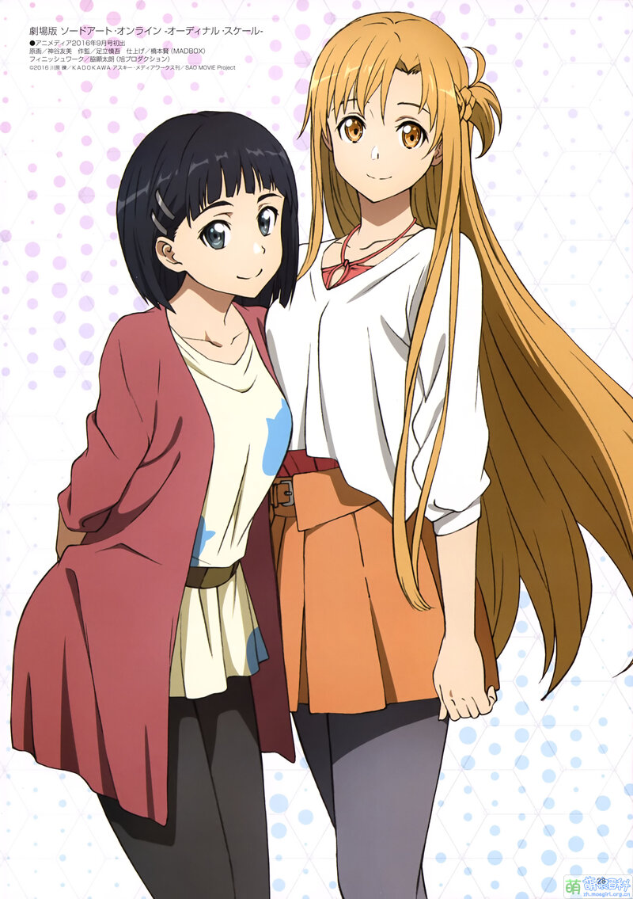

ALO：
 亚丝娜
亚丝娜
亚丝娜在续篇《妖精之舞》篇由于现实世界父亲部下须乡伸之（游戏内为精灵王奥伯龙）的阴谋， 未能从《SAO》回到现实世界，而是被囚禁于新MMORPG《Alfheim Online》（ALO）， 名为“蒂塔妮亚”，后为桐人救出。 之后选用擅长治愈魔法的“水精灵”角色，加入桐人缺乏辅助角色的队伍。
在妖精之舞篇因为须乡伸之的阴谋而困在ALO的世界里，被当成妖精王的王妃“蒂塔妮亚（Titania）” ，囚禁在世界树顶的笼子。在机智地得知密码后从笼子脱逃， 并发现了须乡伸之进行人脑控制的实验场，却被发现而被抓回笼子并更改密码。 而后被桐人从ALO里救出，在现实世界与他重逢并成为了情侣。

亚丝娜